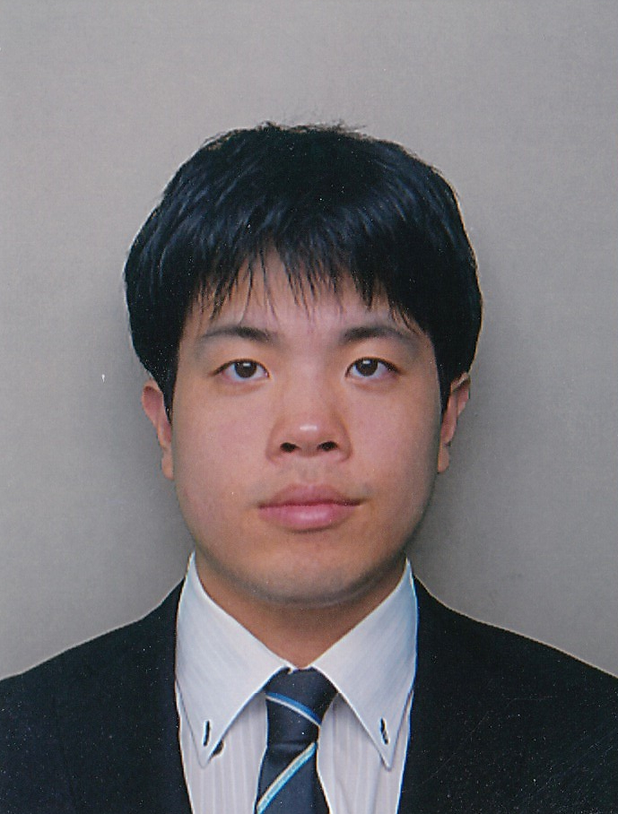

Faculties
- Professor Masaki Aida

- Professor Nobutaka Ono
Microphone Array / Source Separation / Acoustic Scene Recognition / Time-Frequency Analysis / Acoustic Signal Processing - Professor Kaoru Katayama

- Professor Yasufumi Takama

- Professor Nobuyuki Nishiuchi

- Professor Takahiro Matsuda

- Professor Masaaki Fujiyoshi

- Professor Masahiro Nagai

- Associate Professor Shogo Okamoto

- Associate Professor Sayaka Shiota

- Associate Professor Eri Shimokawara

- Associate Professor Takao Fukui

- Associate Professor Syohei Yokoyama

- Associate Professor Wakako Fushikida
Educational Technology / Cognitive Psychology / Information Literacy Education / Seminar Education / Quantitative Analysis - Assistant Professor Hiroki Shibata

- Assistant Professor Shino Shiraki
Sensor location estimation / Pedestrian indoor location estimation / Environmental information estimation - Assistant Professor Kazuki Nakajima
 Computational Social Science / Network Science / Social Data Analysis - Assistant Professor Hachiro Fujita

- Distinguished Leading Professor/ Specially Appointed Professor / Professor Emeritus Hiroshi Ishikawa

- Distinguished Leading Professor/ Specially Appointed Professor / Professor Emeritus Hitoshi Kiya